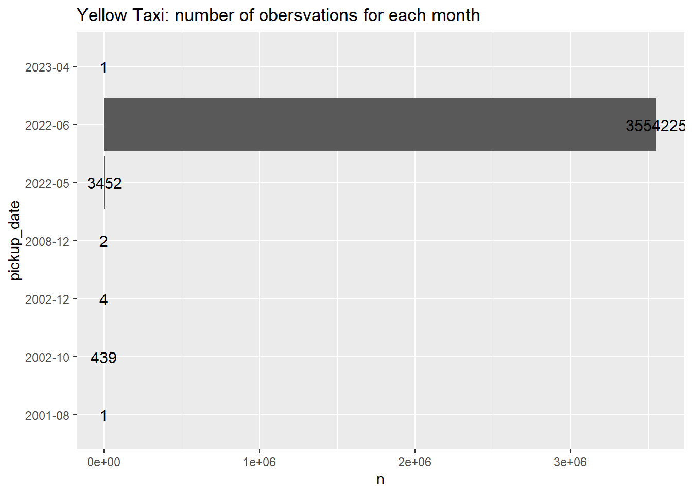
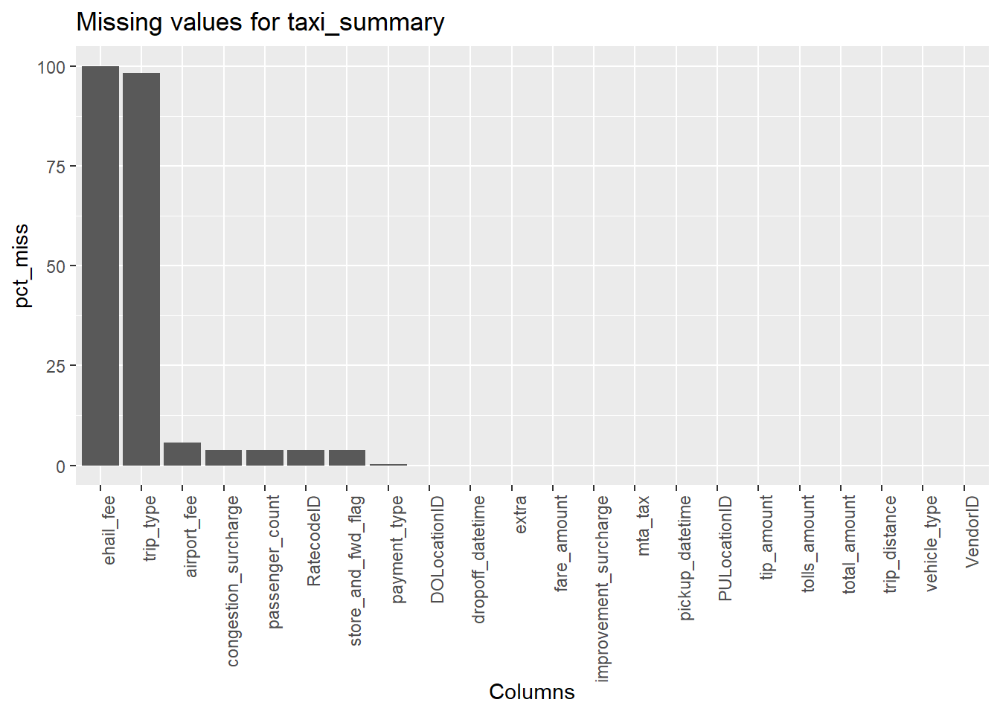
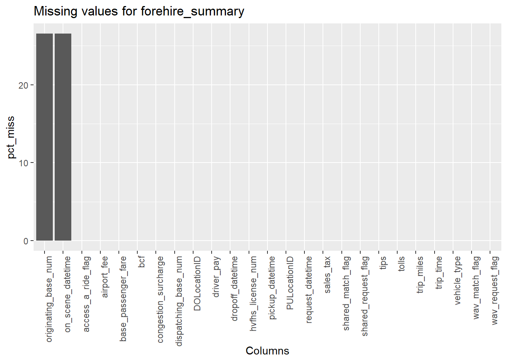
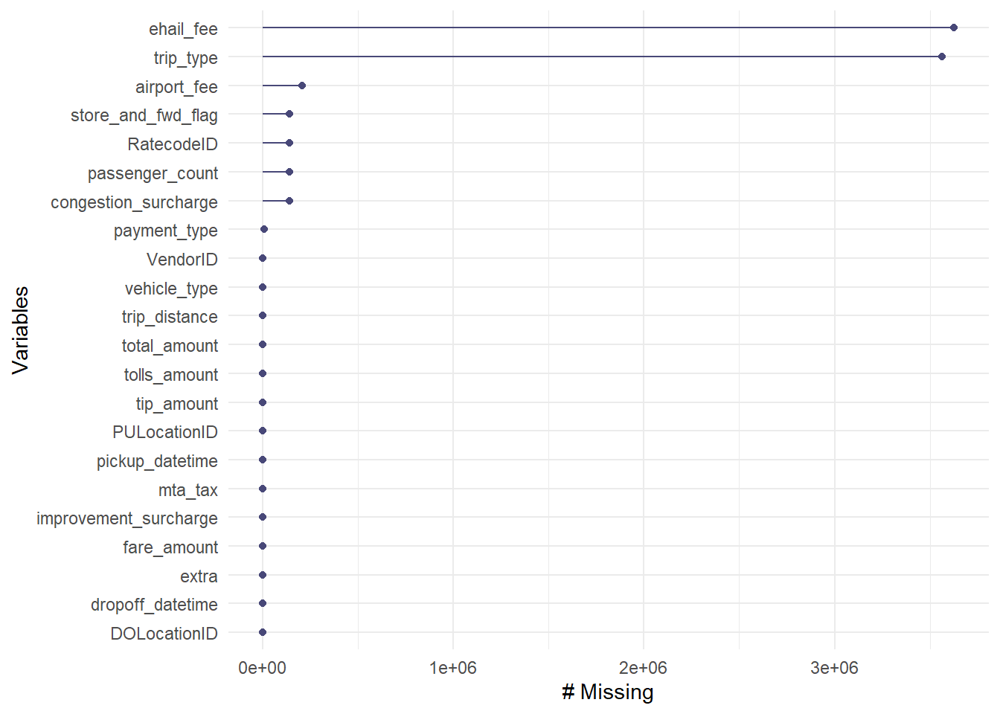
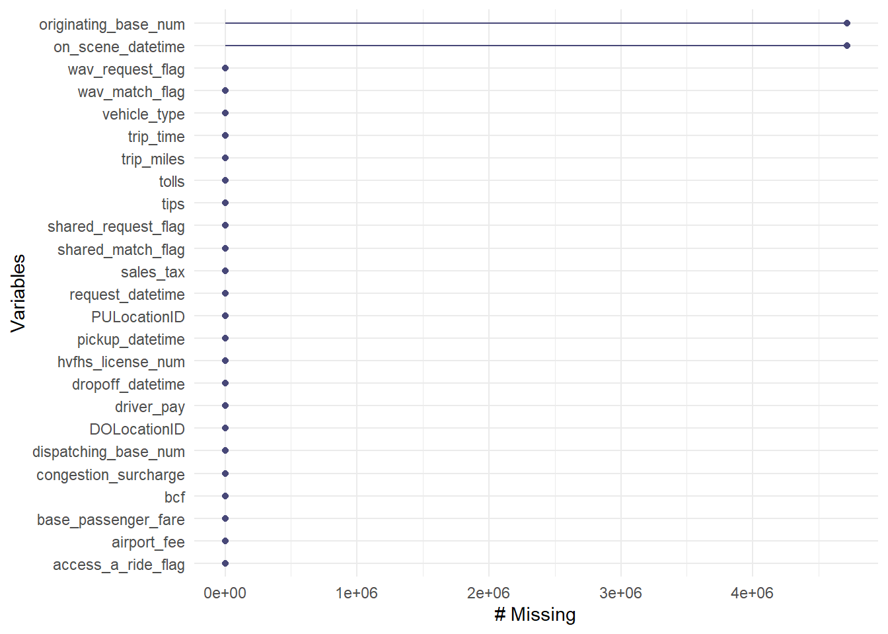
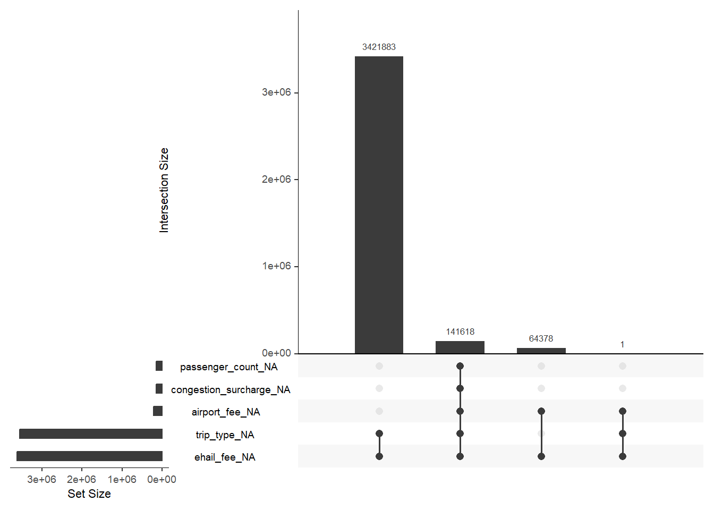

Chapter 3 Data
3.1 Sources
The Taxi & Limousine Commission(TLC) of New York City is responsible for collecting the data. The data is collected by the technology providers authorized by TLC under the Taxicab & Livery Passenger Enhancement Programs (TPEP/LPEP). In terms of the options, we can download the monthly trip data for yellow taxi cabs, green taxi cabs, and for-hire vehicles. We decided to use data from all types of vehicles because it would be more helpful for us to learn about the transportation status of NYC from more aspects. We also decided to download the data of June, which was the latest available data at that time.
Some basic information of the data are:
- There are 3 datasets in total, one for yellow taxi cab, one for green taxi cab, and one for for-hire vehicles.
- In total, there are over 200,000 observations for green taxi trips, over 10,000,000 observations for yellow taxi trips, and over 20,000,000 for for-hire vehicle trips. Overall, we have over 30 million records.
- For the yellow and green taxi cab trip data, some important variables are:
- tpep_pickup_datetime: The pickup time (when the meter was engaged).
- tpep_dropoff_datetime: The dropoff time (when the meter was disengaged).
- Passenger_count: Number of passengers in the trip.
- Trip_distance: Trip distance, in miles.
- PULocationID/DOLocationID: TLC Taxi Zone when pickup/TLC Taxi Zone when dropoff.
- RateCodeID: The rate code at the end of the trip. This helps us identify whether the vehicle went to the airport or not.
- Tip_amount: The amount of tip the passenger paid.
- Total_amount: The total amount charged to the passenger.
- congestion_charge: The charge of passing through NYC congestion zone.
- For the for-hire vehicle trip data, some important variables are:
- pickup_datetime/dropoff_datetime: The date and time of the trip pickup/dropoff
- PULocationID/DOLocationID: TLC Taxi zone where the trip begins/ends.
- trip_miles: The trip distance in miles.
- trip_time: The time elapsed of the trip, in seconds.
- congestion_charge: The charge of passing through NYC congestion zone.
- tips: same as yellow/green taxi trips.
- driver_pay: The amount that the driver gets paid.
Issues/Problems with the Data:
1. First of all, we’ve found data entries with wrong dates. For example, there are data entries that are dated on 2021, other months in 2022, or even 2023(the future!), which is not what we want to use.
2. Some data entries have negative tip/total amount. Some cases have tip amount greater than total amount.
3. There are trip distances that are extremely large, an example would be 300,000 miles, which clearly doesn’t make sense.
4. The trip record data for the date of “2022-06-30” are not complete. Some of them will be included in 2022-July data file, which is not included in our project.
3.2 Cleaning / transformation
We have 3 datasets in total, one dataset for each vehicle type.
The time scope for our project data is June 2022. However, if we take a close look at the data for each vehicle type, there are some trip record data with wrong datetime. Take the combined version dataframe of yellow taxi as an example:  From the graph above, it is clear that there are some invalid data trip records, and we need to limit the pick-up date in Jun 2022 to remove wrong date, such as “2023-04” and “2001-08”.
After that, since our final goal is to combine three vehicle types in to a large complete data set, we need some data transformation as following steps:
- Manually add a “vehicle_type” column: “G” for green taxi trip data, “Y” for yellow taxi trip data, “H” for for-hire vehicle trip data.
- For each vehicle data set, rename the column representing the pick up time as “pickup_datetime”; rename the column representing the drop off time as “dropoff_datetime”.
- Combining the data set of green taxi and yellow taxi as a whole data set called “taxi”.
- Adding a “total_amount” column in for_hire vehicle data set by adding all other fees together (base_passenger_fare+tolls+bcf+sales_tax+congestion_surcharge+airport_fee), since for_hire vehicle data set does not have the “total_amount” column.
- Select eight important columns that are shared by both taxi data set and for-hire vehicle data set: ‘pickup_datetime’,‘dropoff_datetime’,‘PULocationID’,‘DOLocationID’,‘trip_distance’,‘tip_amount’,‘total_amount’,‘vehicle_type’.
- Combine taxi data set and for-hire vehicle data set as the final complete data set that we will use for plotting and answering the research topic question.
- Output the whole vehicle data set as a parquet file, “vehicle.parquet”, as a convenient way to import data.
3.3 Missing value analysis
To check and analyze the Missing Data, we have used multiple approaches:
First, we used is.na() wrapped in colSums()to observe the number of missing values column-wise.
## ehail_fee trip_type airport_fee store_and_fwd_flag
## 3627880 3563502 205997 141618
## RatecodeID passenger_count congestion_surcharge payment_type
## 141618 141618 141618 9276
## VendorID pickup_datetime dropoff_datetime PULocationID
## 0 0 0 0
## DOLocationID trip_distance fare_amount extra
## 0 0 0 0
## mta_tax tip_amount tolls_amount improvement_surcharge
## 0 0 0 0
## total_amount vehicle_type
## 0 0## originating_base_num on_scene_datetime hvfhs_license_num dispatching_base_num
## 4713868 4713865 0 0
## request_datetime pickup_datetime dropoff_datetime PULocationID
## 0 0 0 0
## DOLocationID trip_miles trip_time base_passenger_fare
## 0 0 0 0
## tolls bcf sales_tax congestion_surcharge
## 0 0 0 0
## airport_fee tips driver_pay shared_request_flag
## 0 0 0 0
## shared_match_flag access_a_ride_flag wav_request_flag wav_match_flag
## 0 0 0 0
## vehicle_type
## 0Next, we used a package naniar to produce a summary of the datasets’ missing value counts and percent missing.
## # A tibble: 22 × 3
## variable n_miss pct_miss
## <chr> <int> <dbl>
## 1 ehail_fee 3627880 100
## 2 trip_type 3563502 98.2
## 3 airport_fee 205997 5.68
## 4 store_and_fwd_flag 141618 3.90
## 5 RatecodeID 141618 3.90
## 6 passenger_count 141618 3.90
## 7 congestion_surcharge 141618 3.90
## 8 payment_type 9276 0.256
## 9 VendorID 0 0
## 10 pickup_datetime 0 0
## # … with 12 more rows## # A tibble: 25 × 3
## variable n_miss pct_miss
## <chr> <int> <dbl>
## 1 originating_base_num 4713868 26.6
## 2 on_scene_datetime 4713865 26.6
## 3 hvfhs_license_num 0 0
## 4 dispatching_base_num 0 0
## 5 request_datetime 0 0
## 6 pickup_datetime 0 0
## 7 dropoff_datetime 0 0
## 8 PULocationID 0 0
## 9 DOLocationID 0 0
## 10 trip_miles 0 0
## # … with 15 more rowsFor visualizations, we first made two bar plots (one for each dataset) to visualize the percent of missing values in each column. 
Based on the numerical and visualzed results. We can see that there are only two columns in for-hire vehicles that contains missing values. One is originating_base_num (the number of the base that the vehicle is first dispatched) and on_scene_datetime (the time that the driver arrived at the pickup location). We have determined that both columns are irrelevant to our research topics and therefore will drop these columns in our future analysis. We also believed that the bar plot on for-hire vehicles has already shown enough information about its missing values.
On the other hand, for the taxi data, we can see that the columns with the most number of missing values are ehail_fee(the fee it costs for passengers to use TLC’s app to call their taxi) and trip_type(the feature that indicates the trip type of green taxi). We have found that this is because yellow taxi doesn’t have an ehail_fee column and all of the values in green taxi’s ehail_fee column are NA, this could indicate that calling a green taxi doesn’t need a fee nowadays. In addition, the trip_type is a column that only appears in green taxi, thus all of the yellow taxi trips would have NA values in it. Some other columns with missing values are: airport_fee, congestion_surcharge, passenger_count, RatecodeID, store_and_fwd_flag, and payment_type.
Secondly, we used gg_miss_var() in the naiar package and generated a graph of missingness in variables for each dataset. 
Based on the results, we can see that the plots of number of missing values support our findings from the percent missings.
Finally, we plot an upset plot for taxi dataset. We originally planned to plot one for the forhire vehicles too, but our devices were out-of-memory due to the size of the dataset (over 60 million rows). 
Based on this upset plot, we can get the following:
1. ehail_fee and trip_type has the most missing values. Which aligns with our previous findings.
2. There are over 3 million cases where both trip_type and ehail_fee are missing.
3. There are over 140 thousand cases where ehail_fee, trip_type, airport_fee, congestion_surcharge, passenger_count are all missing.
This are interesting findings to us. In addition to the trip_type and ehail_fee we discussed previously, airport_fee is a column that the green taxi trip data doesn’t have. Also, congestion_surcharge is a charge placed on passenger when their trips passed through the congestion zone of NYC. One possible reason to explain this missing is that the driver didn’t drive through the congestion zone and therefore forgot to record the 0 charge. Lastly, the missing of passenger_count could also be an interesting topic to research. If the missing values are mostly from yellow taxi trips, this could be because that the driver didn’t remember how many passengers there were or forgot to record it. If the missing values are mostly from green taxi trips, this could be because that the system had a glitch other than the reasons I mentioned for the yellow taxi.